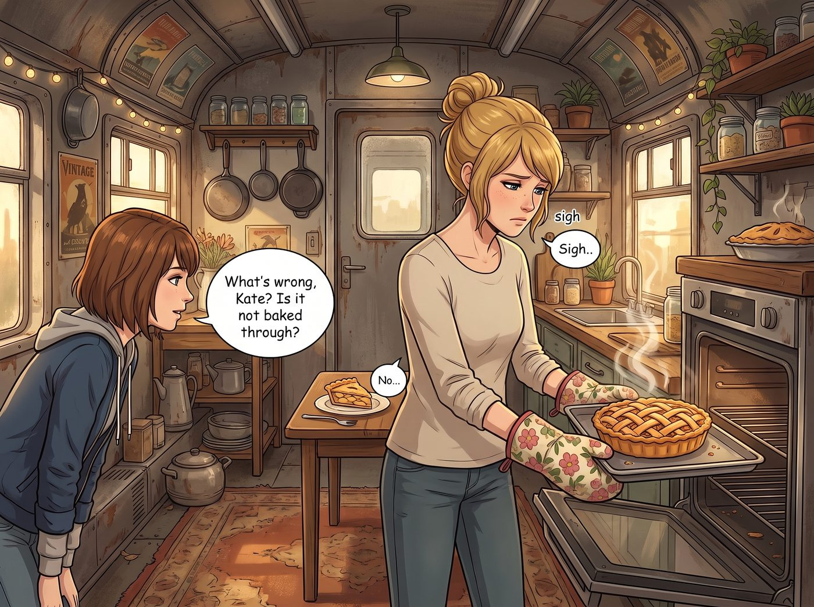
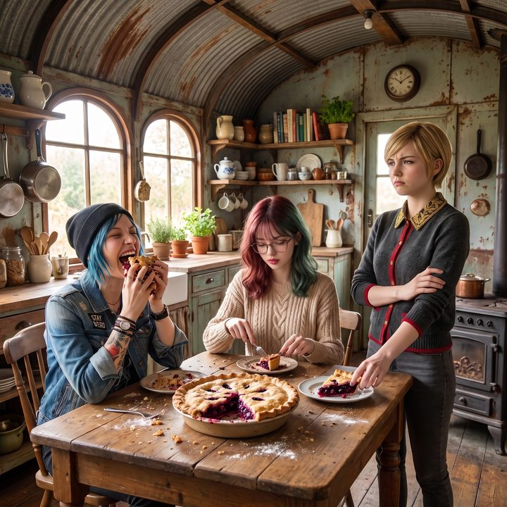

蘋果的味道


這是一個在二號車廂的午後，由一個烤箱裡的蘋果派引發的討論。
Kate 戴著隔熱手套，將一個烤得金黃酥脆的蘋果派從烤箱裡端了出來。香氣瞬間瀰漫了整個車廂。但在切下一小塊品嚐後，Kate 卻微微皺起了眉頭，發出了一聲帶著失落的嘆息。
「怎麼了，Kate？沒烤熟嗎？」Max 湊了過來。
「不是……」Kate 放下叉子，看著盤子裡的蘋果，眼神裡有一種說不出的悵然，「只是覺得，它沒有蘋果的味道了。我記得小時候在祖母家的果園裡，隨便摘下一個蘋果咬一口，那種酸甜的香氣能一直衝到腦門裡。可是現在，無論我買多貴的有機蘋果，吃起來都只有一種……甜甜的塑膠感。食物好像都沒有食物的味道了。」
躺在沙發上敷著眼膜的 Victoria 冷哼了一聲：「親愛的，這不是蘋果的問題。長大本來就是一個失去味覺的過程。我十歲的時候吃第一口白松露，覺得那是人間美味；現在？那東西對我來說就是一塊標價五百美元、用來在社交晚宴上裝腔作勢的真菌。」
「所以，到底是食物變了，還是我們變了？」Max 忍不住陷入了沉思。
一、排除法
工作站後面的 Lily 轉過了身，推了推圓框眼鏡。
「Max 學姐，這個問題可以用排除法來回答。我們先檢查兩個最常被拿來解釋的變量。」
「第一，生理硬體。很多人以為長大之後味蕾會大量萎縮，所以吃什麼都沒味道。」她搖了搖頭，「但這是個誤會。味蕾大約每兩週就會整批更新一次，真正明顯減少，要到四五十歲以後。我們現在才二十五歲左右，硬體幾乎沒有任何折舊。」
Victoria 拿下眼膜，挑了挑眉：「所以不是我的舌頭老了？」
「不是。您的舌頭非常年輕，Victoria 學姐。」
Lily 拿起桌上的一顆蘋果，在手裡轉了轉。
「第二，食物本身。這一點倒是真的。現在超市裡的大部分商業品種，在選育的時候，優先考慮的是耐運輸、耐儲存、外皮夠硬、顏色夠紅。風味，往往排在這些指標後面。所以這顆蘋果確實沒有祖母果園裡的那麼香，Kate 學姐沒有吃錯。」
她把蘋果放回桌上：
「但即使是這樣，也只能解釋一部分。如果只是品種的問題，那麼 Victoria 學姐吃的白松露、還有其他很多東西，不應該也一起變得沒味道。所以，還剩下一個變量，我還沒找到。」
二、雙鯨魚
「我知道剩下的那個是什麼。」
Chloe 靠在冰箱旁，手裡拿著一罐啤酒，眼神罕見地飄向了窗外的遠方。
「我同意 Victoria 說的，食物的味道跟經歷有關。但我懷念的，不是高檔餐廳。」
她喝了一口啤酒，嘴角勾起一抹苦澀的笑：
「小時候，我爸常常帶我去雙鯨魚餐廳吃起司漢堡。那時候的漢堡，是我吃過全宇宙最美味的東西，肉汁能流滿整個盤子。那是一種絕對安全的味道。」
「後來他出了車禍。我再去同一家餐廳，點同一個漢堡，卻覺得它又乾、又柴，甚至帶著一股悲傷的餿味。不是 Joyce 改了配方，而是坐在我對面那個會給我講冷笑話的男人，不見了。」
車廂裡安靜了下來。
「長大後食物沒有味道，」Chloe 低聲說，「是因為我們失去了小時候那種無憂無慮、被人好好保護著的安全感。我們現在吃東西，是為了交房租、為了活下去、為了對抗這個操蛋的世界。焦慮，是會把味道吃掉的。」
Lily 看著她，輕輕點了點頭。「……這是剩下的那個變量。」
三、各自的失去
這句話，精準地擊中了車廂裡每一個人。
Kate 低下了頭。她懷念祖母的蘋果，其實是懷念那個在她經歷那段影片之前、還沒被流言和家人的失望壓得喘不過氣的童年。那時候，她只是一個在果園裡跑來跑去、被祖母叫回家吃派的小女孩。
Victoria 重新躺回沙發上，沒有再說話。十歲那口白松露好吃，也許只是因為那天她父親難得地誇了她一句。
而 Lily 看著自己手裡的馬克杯，很久沒有出聲。
她不是沒有吃過好吃的東西。小時候坐在父親肩上舔的那支冰淇淋，是她記得的、最後一個純粹好吃的味道。後來她長大了，餐桌上就只剩下水煮雞胸肉、無糖燕麥和魚油膠囊。父母說，那是為了讓她保持大腦清醒。從那以後，吃東西對她來說，就只是一項維持生命體徵的行政任務。
「所以……」Kate 有些難過地看著那個蘋果派，「我們這輩子，都吃不到真正美味的東西了嗎？」
四、新的味道
Max 靜靜地看著她們。
老錢的麻木、龐克的失去、天使的懷念、黑魔法師的那支冰淇淋。長大確實是一場剝奪。
但 Max 走上前，拿起了那把切派的刀。
「也許我們找不回小時候的味道了。」Max 切下一大塊蘋果派，遞給 Chloe，又切了一塊，放在 Lily 的辦公桌上。
「但我們現在有新的。」
Chloe 毫不客氣地把一大塊派塞進嘴裡。Lily 小心翼翼地用叉子戳下一小塊。Victoria 嘴上嫌棄，還是默默伸手拿了一個盤子。
「Chloe，我們在加州路邊攤吃的那個塔可，妳敢說它不好吃嗎？」Max 笑著說，「Kate，妳上次烤糊的那塊巧克力餅乾，Lily 不是連渣都吃乾淨了嗎？」
她的眼神溫柔而堅定：
「小時候的東西好吃，是因為有人保護我們。現在，我們有彼此。這輛充滿機油味、吵吵鬧鬧的二號車廂，就是我們新的安全區。十年後，當我們回憶起今天這個沒什麼蘋果味的蘋果派時，它大概會變成我們這輩子最想再吃一次的東西。」
Chloe 嚼著蘋果派，愣了一下，然後咧開嘴，露出了一個狂野的笑容，一把攬住 Max 的肩膀：「說得好，超級麥克斯！這破蘋果派簡直天下第一好吃！」
Lily 默默咀嚼著嘴裡的甜味。
這是那支冰淇淋之後，她為數不多的、不是為了攝取熱量，而是為了跟別人分享而吃下的東西。
她推了推眼鏡，輕輕點了點頭：「從變量分析來看，Max 學姐的結論是成立的。」
Max 舉起寶麗來相機。
鏡頭裡，沒有昂貴的法國大餐，沒有關於品種和味蕾的爭論，只有幾個在成人世界裡抱團取暖的女孩，正在分食一個普通的蘋果派。
「喀嚓。」
照片吐出。Max 在背面寫下：
『規則第九十四條：長大後，食物確實會失去一些魔法。但沒關係，只要對面坐著對的人，就算是一顆超市裡的普通蘋果，我們也能嚼出新的味道。』